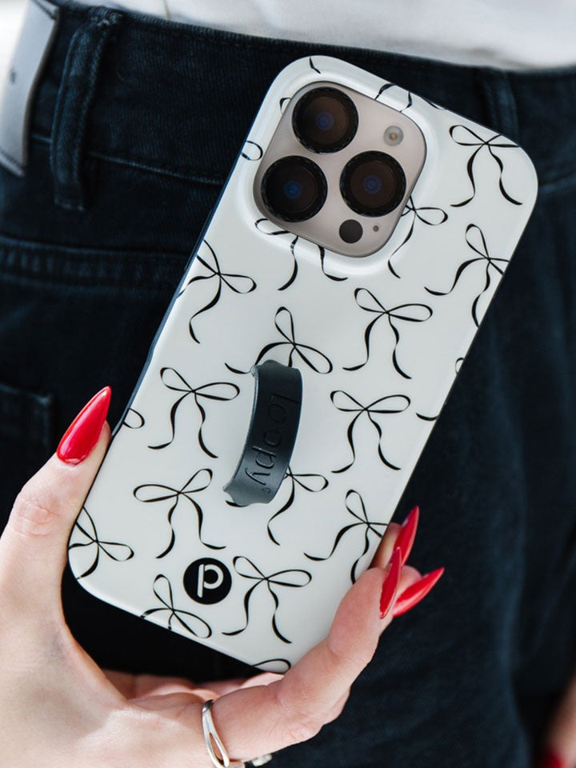
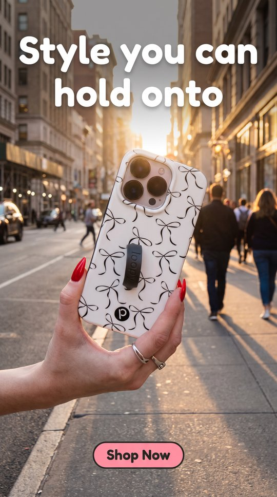
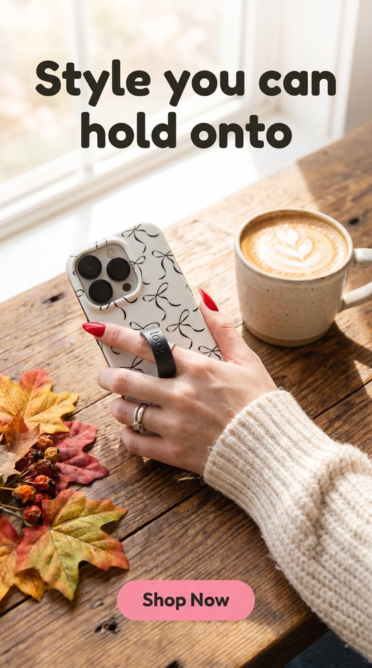

Copy: headline "Style you can hold onto", CTA "Shop Now". Scores are 0–2; fidelity is judged against the source photo and is the gate. Click a thumbnail for the full render.
0-2 each. Fidelity vs the source photo (pattern, loop, camera cutout) is the gate. Text = headline and CTA spelled exactly, once, with no other words. Layout = 9:16 and the headline below the top-12% logo zone (2 clear, 1 crosses the line, 0 headline mostly inside the zone or the layout is broken). Latency and cost are scored per model.
| Model | OK | Min fidelity A / B | Avg fidelity | Avg text | Avg layout | Latency (score) | $/image (score) | Total (4 outputs × 3 criteria, plus latency and cost; max 28) | Notes |
|---|---|---|---|---|---|---|---|---|---|
Nano Banana Pro editfal-ai/nano-banana-pro/edit | 2/2 | – / – | – | – | – | 26–30s (1) | $0.150 (0) | – (fails gate) | 26-49s, the variance is queueing. Same 1536x2752 output. |
| Source | Nano Banana Pro edit | |
|---|---|---|
A. Black Bows hero (hand + loop, busy pattern)  |  not scored yet |  not scored yet |
Create a full-screen vertical 9:16 mobile ad (portrait interstitial) for Loopy. PRODUCT — use the reference image exactly. The phone case "Black Bows" must keep its exact pattern, colors, finish, finger loop and camera cutout. Do not redraw, restyle or add products. Only this one case appears. Keep the hand and loop interaction from the photo. SCENE — outdoors on a busy city sidewalk at golden hour, the phone held securely by the finger loop mid-stride. Mood: playful, confident, trendy. A real photograph, not a template: no color bands, panels, frames, borders, stickers or collage. The scene keeps its own natural colors. LAYOUT — the headline sits in the top third. The button is a pill centered horizontally near the bottom edge, no wider than 40% of the image width. Keep the bottom-left corner, beside the button, free of any text: the scene simply continues there. TEXT — render exactly these two strings, each exactly once, spelled exactly, and no other words anywhere (including on props): Headline (large, bold rounded sans, #2C2B23 or white for contrast, in the top third, with the scene continuing behind it): "Style you can hold onto" Button (pill, centered near the bottom, #F990A8 fill, #2C2B23 text): "Shop Now" No prices, logos, watermarks, labels or extra captions.